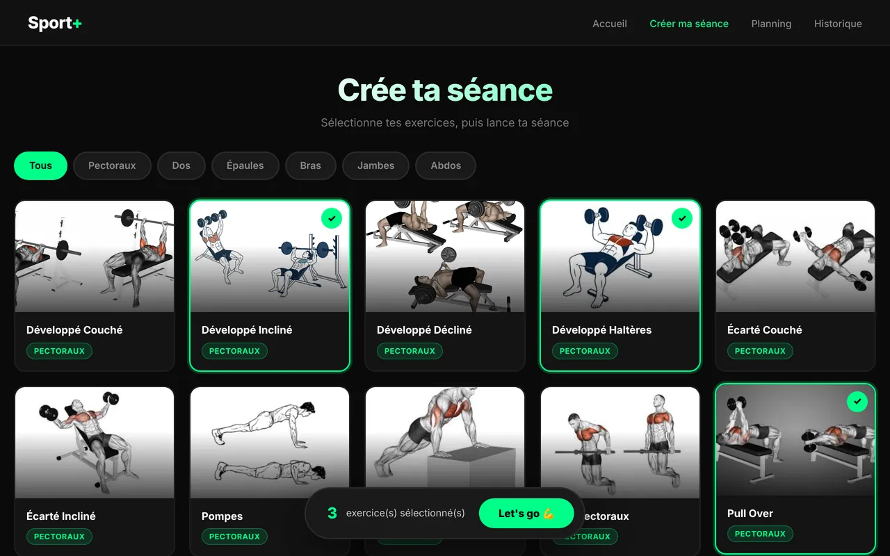
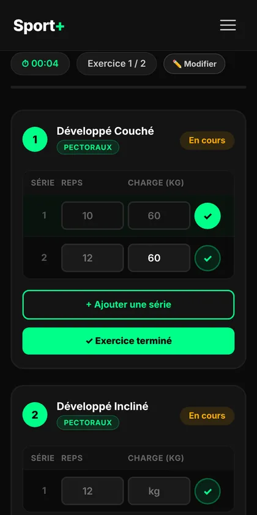

01 · Application web
Sport+
Une application de musculation pensée pour le téléphone, à la salle : on compose sa séance, on la suit série par série, et on voit sa progression.
- Séance en deux temps : choix des exercices, puis suivi des séries (répétitions × charge) avec chrono.
- Planning mensuel, séances hebdomadaires et rappel le jour J.
- Historique, records personnels et graphiques de progression.
- Aucun compte ni serveur : tout reste dans le navigateur, et une séance en cours est reprise automatiquement.